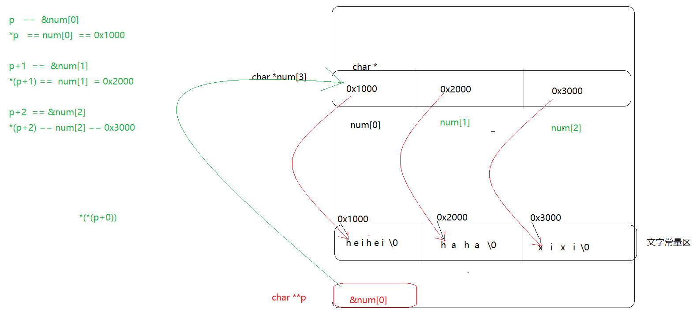

1 指针与字符串
int main01()
{
//指针与字符串
char a[] = "helloworld";//定义了一个字符数组,字符数组内容为helloworld\0
//定义一个指针用来保存数组首元素的地址
char * p = a;
printf("%s\n",p);//%s打印一个字符串,要的是首个字符的地址
printf("%s\n", p + 2);
printf("%c\n",*(p+3));
*p = 'm';
printf("%s\n", p);
//a++
p++;
*p = 'o';
printf("%s\n", p);
//printf("%d\n",sizeof(a));//11
//printf("%d\n", sizeof(p));//4
//printf("%d\n", strlen(a));//
//printf("%d\n", strlen(p));//
system("pause");
return 0;
}
2 字符串常量
"hello" 字符串常量是不可以改变的,存在文字常量区
在使用时.双引号""代表取这个字符串首元素的地址
char *p = "hello"; //代表将字符串常量的地址赋值给指针p
int main()
{
char a[] = "helloworld";//定义了一个字符数组,字符数组内容为helloworld
//定义一个指针用来保存数组首元素的地址
char * p = a;
p = "abcdef";//字符串常量存文字常量区,""在使用时,取的是字符串首元素的地址
//文字常量区的内容是不可以改变的
printf("%s\n",p);
printf("%d\n",sizeof(p));//4
printf("%d\n", sizeof("abcdef"));//7
printf("%d\n", strlen(p));//6
printf("%d\n", strlen("abcdef"));//6
*p = 'm';
printf("%s\n",p);
system("pause");
return 0;
}
3 字符指针作为形参
char * my_strcat(char * src, char *dst)
{
int n = strlen(src);
int i = 0;
while (*(dst + i) != 0)
{
*(src+n+i) = *(dst + i);
//src[n+i] = dst[i] ;
i++;
}
*(src + n + i) = 0;
return src;
}
int main()
{
char str1[128] = "hello";//hello123456\0
char str2[128] = "123456";
my_strcat(str1,str2);
printf("%s\n",my_strcat(str1, str2));
system("pause");
return 0;
}
4 const修饰的指针变量
int main()
{
char buf[] = "hello";
char str[] = "acbg";
const char *p = buf;//const修饰指针,不能通过指针修改指针所指向的空间内容
//*p = 'b'; err 不能通过p指针修改那块空间的内容
char * const k = buf;//指针变量k初始化之后不能改变k指针变量本身的指向
// k = "world"; err
// k = str; err
system("pause");
return 0;
}
5 字符指针数组
//字符指针数组
//是一个数组,每一个元素是字符指针
int main()
{
/*char *p1 = "heihei";
char *p2 = "haha";
char *p3 = "xixi";*/
//char *num[3] = { p1,p2,p3};
char *num[3]={ "heihei" ,"haha","xixi"};
//定义一个指针保存num数组首元素的地址 &num[0] num
char **p = num;
for (int i = 0; i < 3; i++)
{
// printf("%s\n",*(p+i));
printf("%s\n", p[i]);
}
printf("%c\n",*(*(p+1)+3));// *(p[1]+3) == p[1][3]
//for (int i = 0; i < 3; i++)
//{
// printf("%s\n",num[i]);
//}
//printf("%c\n",*num[0]);//
//printf("%c\n", *(num[1] + 1));
//printf("%c\n", *(num[2]+2));
system("pause");
return 0;
}

6 字符指针数组作为main函数的形参
int main(int argc,char *argv[])
argc 是执行可执行程序是的参数个数
argv 是一个字符指针数组,保存的是参数(字符串)的首元素地址
//.*.exe hello 123456
//char *argv[] = { ".*.exe", "hello" "123456" };
int main(int argc,char *argv[])
{
/*printf("%d\n",argc);
printf("%s\n", argv[0]);
printf("%s\n", argv[1]);
printf("%s\n", argv[2]);
printf("%s\n", argv[3]);*/
for (int i = 0; i < argc; i++)
{
printf("%s\n", argv[i]);
}
system("pause");
return 0;
}
7 字符串处理函数
strcpy
char str1[128]
char str2[128]
strcpy(str1,str2);//将str2的字符拷贝至str1数组中,注意,str2遇到\0结束,会将\0拷贝至str1
int main()
{
char str1[128] = "heiheihaha";
char str2[128] = "world";
strcpy( str1 , str2);
printf("%s\n",str1);
system("pause");
return 0;
}
strcpy
char str1[128]
char str2[128]
strncpy(str1,str2,n);//将str2中的前n个字符拷贝至str1中,如果拷贝时不足n个,遇到\0拷贝结束
int main()
{
char str1[1024] = "";//wo\0\0\0 wo\0rl
char str2[128] = "wo\0rldhello";
//strcpy( str1 , str2);
strncpy(str1,str2,5);
// printf("%s\n",str1);
for (int i = 0; i < 5; i++)
{
printf("%d ",str1[i]);
}
system("pause");
return 0;
}
strcat
strcat(str1,str2)//将str2字符数组中的字符连接到str1字符数组中,遇到\0结束
strncat(str1,str2,n)//将str2字符数组中的n个字符连接到str1字符数组中,遇到\0结束
int main()
{
char str1[1024] = "123456";//wo\0\0\0 wo\0rl
char str2[128] = "worldhello";
//strcat(str1,str2);//将str2的字符串拷贝到str1字符串的后面
strncat(str1, str2,5);
printf("%s\n",str1);
system("pause");
return 0;
}
strcmp
注意: 比较时遇到\0结束比较
int main()
{
char str1[] = "a\0bcdef";
char str2[] = "a\0cdrrr";
//str1数组中和str2数组拿出一个元素进行比较,相等继续往后比较
//比较的是字符的ascii值
//如果str1> str2 返回值等于1
//如果str1== str2 返回值等于0
//如果str1 <str2 返回值等于 - 1
//printf("%d\n",strcmp(str1,str2));
printf("%d\n", strncmp(str1, str2,3));
system("pause");
return 0;
}
sprintf: 组包函数
int len = sprintf(buf,"格式","数据");//将数据安装格式组包,存放在数组buf中,
sprintf函数的返回值是组完包的有效长度
int main()
{
int year = 2018;
int month = 10;
int day = 20;
char buf[1024] = "";
//printf("year=%d month=%d day=%d \n",year,month,day);
int len = sprintf(buf,"year=%d %cmonth=%d day=%d \n",year, 0,month, day);
//printf("%d\n",strlen(buf));
printf("len=%d\n",len);
printf("buf=[%s]",buf);
system("pause");
return 0;
}
sscanf 拆包函数
sscanf(buf,"格式",数据);//将buf的内容格式化输出到数据
int main()
{
//%d 0-9的字符
int year =0 ;
int month = 0;
int day = 0;
char buf[1024] = "beijing:2018:t:10:20";
//scanf("%d:%d:%d",&year,&month,&day);//从键盘按照相应的格式获取数据
sscanf(buf, "beijing:%d:t:%d:%d", &year, &month, &day);//从buf中按照`相应的格式获取数据
printf("%d %d %d\n",year,month,day);
system("pause");
return 0;
}
strchr
strchr(buf,ch)//在buf字符数组中查找字符ch出现的位置,如果成功返回此字符出现位置的地址,如果没有找到,返回NULL
char *my_strchr(char *p, char ch)
{
int i = 0;
while (p[i] != 0)
{
if (p[i] == ch)
return &p[i];
i++;
}
if (p[i] == 0)
return NULL;
}
int main()
{
char str[] = "xixihellogworld";
char *p = strchr(str,'g');
//char *p =my_strchr(str,'g');
printf("%s\n",p);
system("pause");
return 0;
}
strstr
strstr(str1,str2)//在str1字符数组中查找str2字符串出现的位置,并且返回这个位置的地址
char *my_strstr(char *str1, char *str2)
{
int i = 0;
while (str1[i] != 0)
{
if (str1[i] == str2[0])
{
if (0 == strncmp(str1 + i, str2, strlen(str2)))
return str1 + i;
}
i++;
}
if (str1[i] == 0)
return NULL;
}
int main()
{
char str1[] = "helloaabcfhaffjhafafha";
char str2[] = "abc";
//在str1中查找str2字符出现的位置
//先找a字符,如果找到了a字符,在比较
char *p = strstr(str1,str2);
printf("%s\n",p);
system("pause");
return 0;
}
strtok:
int main()
{
char str[] = "15080015225&bangquan#82263&123456";
char *p[10] = {NULL};//初始化指针数组元素全部为NULL
//strtok
//char *p1 = strtok(str,"#");//在str1中将#切割,返回切割前面的字符串
//printf("%s\n",p1);
//char *p2 = strtok(NULL,"#");
//printf("%s\n",p2);
//char *p3 = strtok(NULL, "#");
//printf("%s\n", p3);
int i = 0;
do {
if(i == 0)
p[i] = strtok(str, "#&");
else
p[i] = strtok(NULL, "#&");
//i++;
} while ( p[i++] != NULL);//p[i] != NULL i=i+1 如果strtok的返回值等于NULL,代表切割完毕
i = 0;
while (p[i] != NULL)
{
printf("%s\n",p[i++]);
}
system("pause");
return 0;
}
atoi : 将字符串转整数
atof: 将字符串转float类型的数据
int n = atoi(需要转的字符串)
8 字符串处理案例
#define _CRT_SECURE_NO_WARNINGS
#include<stdio.h>
#include<string.h>
#include<stdlib.h>
#define _CRT_SECURE_NO_WARNINGS
#include<stdio.h>
#include<string.h>
#include<stdlib.h>
#define _CRT_SECURE_NO_WARNINGS
#include<stdio.h>
#include<string.h>
#include<stdlib.h>
int main()
{
char buf[] = "abcdefg";
char *start = buf;
char *end = &buf[strlen(buf) - 1];
while (end > start)
{
char ch = *end;
*end = *start;
*start = ch;
end--;
start++;
}
system("pause");
return 0;
}
int main02()
{
char buf[] = " hello world ";//hello world
char num[128] = "";
if (buf[0] == 0)
return;
char * start = buf;
char *end = &buf[strlen(buf) - 1];//end指向最后一个字符
//找到第一个不是空格的位置
while (*start == ' ' && *start != 0)
{
start++;
}
while (*end == ' ' && end != start)
{
end--;
}
printf("%d\n",end-start+1);
strncpy(num,start,end-start+1);
printf("num=%s\n",num);
system("pause");
return 0;
}
int strstr_num(char *src, char *dst)
{
int i = 0;
char *p = src;
int n = 0;
do
{
p = strstr(p, dst);
//p = strstr(p+strlen(dst), dst);
if (p != NULL)//如果查找返回的地址不等于NULL,代表找到了
{
n++;
p = p + strlen(dst);
}
} while (p != NULL);
return n;
}
int main01()
{
char src[] = "hdaabcdhaodabcahdaabchdoahdoaabcjdahfaabc";
char dst[] = "abc";
int n = strstr_num(src, dst);
printf("%d\n", n);
system("pause");
return 0;
}